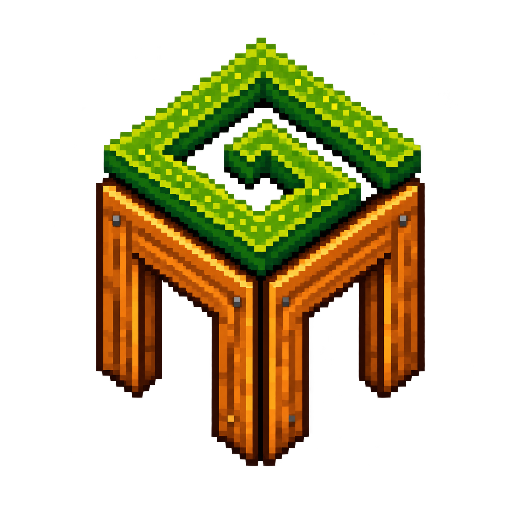

FIRST-RUN SETUP
Connect your farm
The companion stays private and reads only safe copies of your save.
Detecting…
Game installation
Detecting…
Farm saves
Detecting…
Live connection
Where do you own Stardew Valley?
Steam
GOG
Xbox app / Microsoft Store
Other or manual installation
Stardew Valley installation
Browse…
Select the folder that directly contains
Stardew Valley.dll
. The path can be different if you chose another drive.
Farm / save
Browse…
The main extensionless save file. It is never modified.
Track automatically
Start quietly with Windows and update the farm whenever Stardew Valley runs. The dashboard stays closed until you open it.
Keep running in the system tray
Closing the dashboard hides it while tracking continues. Turn this off to quit the companion completely when you close its window.
Follow the farm opened in Stardew
When another save starts producing fresh LIVE data, switch the dashboard to that farm automatically. Histories and proposals remain separate.